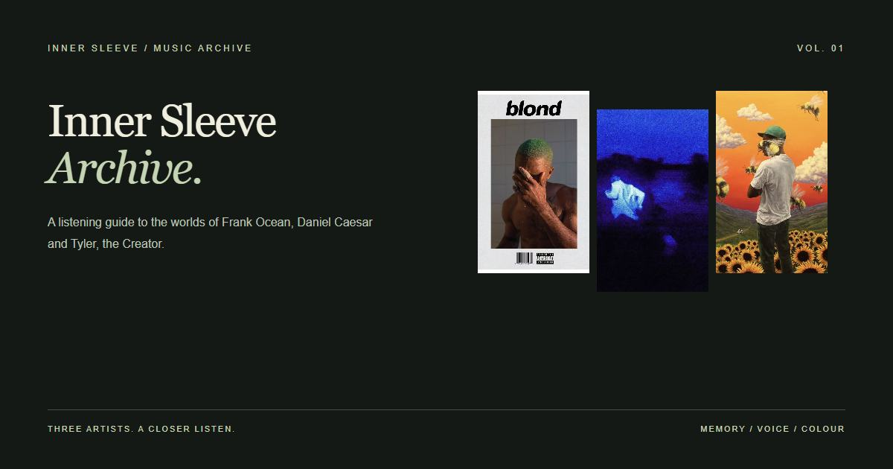

Three artists / A closer listen
Music worth
staying with.
A listening guide to the worlds of Frank Ocean, Daniel Caesar and Tyler, the Creator.
Begin with a portrait. Follow one song, then notice a detail you had missed.
Explore the artists ↓
The core reading route